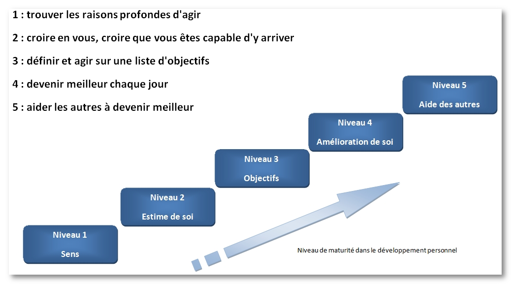

“Je suis maître de mon destin, et capitaine de mon ame “ Ces vers, issus du poème Invictus rédigé par l’écrivain britannique WilliamErnest Henley, pourraient résumer à eux seuls le concept du développement personnel et la formidale quête vers la réalisation de soi”. C’est une démarche personnelle déstinée à améliorer la connaissance de soi pour développer son potentiel et améliorer sa qualité de vie.
Cette démarche individuelle, chacun peut l’initier pour prendre confiance de ses valeurs et renforcer son estime de soi. En apprenant à mieux contrôler vos émotions,vous allez développer votre épanouissement personnel et professionnel de facon spectaculaire. En effet, être heureux, cela s’apprend! savoir apprécier le moment présent, avoir confiance en soi, adopter une psychologie positive,autant de facteurs qui vont influencer votre évolution et changer votre quotidien. Je vais vous partager des articles sur les bonnes méthodes pour adopter des attitudes positives, comment améliorer sa vie quotidienne en supprimant les pensées négatives, et comment adopter des attitudes motivantes qui aide à progresser chaque jour, et plein d’autres articles qui sont utiles pour le développement personnel de chacun de nous.